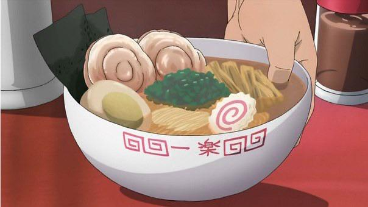

Ramen, Naruto Special

A product of cross-country refugee upbringing, Madame Vo’s namesake noodle soup is unapologetically rich and fantastically comforting—and not just thanks to the giant beef rib
Broth:
- 7 lb. beef bones with marrow
- 2 large white onions (1 lb. 9 oz.)
- 6-8 shallots (1 lb.)
- 1 4-inch piece fresh ginger
- 1 piece rock sugar (1/8 oz.), or more to taste
- 10 black cardamom pods
- 5 star anise
- 3 cinnamon sticks
- 1 tbsp. coriander seed
- 1 tbsp. fennel seed
- 6 whole cloves
- 1 lb. beef brisket
- 3 lb. chuck short ribs
- 1 tbsp. kosher salt, or more to taste
- 1/3 cup fish sauce, preferably Three Crabs brand
Serving:
- 1/2 lb. eye of round, sirloin, flank steak, or London broil, sliced very thinly
- 2 lb. pho rice noodles
- 1 medium onion (7 oz.), very thinly sliced (1 cup)
- 1 bunch scallions, thinly sliced
- 4 cups bean sprouts
- 1 bunch cilantro
- 1 bunch Thai basil
- 2 limes, cut into wedges
- Hoisin sauce (optional)
- Sriracha sauce (optional)
Directions:
- Parboil the bones: In a very large stockpot (at least 12 quarts), add the bones and fill with enough cool water just to cover. Bring to a boil over high heat, then let cook until all impurities have released from the sides of the bones and they appear clean, about 5 minutes. Using a colander set over a sink, pour out the contents of the pot and rinse the bones until they are clean of blood, scum, and impurities (be careful not to lose any marrow in the process). Rinse and clean the stockpot.
- If desired, roast the cleaned bones: Heat oven to 400°. On a large rimmed baking sheet, arrange the bones cut-side up so that the marrow remains intact. Roast, turning once halfway through, until golden brown, about 45 minutes total.
- Char the aromatics: Using metal tongs over an open flame or a preheated broiler, char the onion, ginger, and shallots until they take on dark color, a few minutes each. Remove them before they burn. Set aside.
- In a small, dry skillet over low heat, add the star anise, cinnamon, green cardamom, and fructus amomi; let cook, shaking the pan occasionally, until they begin to release their aroma and toast slightly, 2-3 minutes. Add the fennel seed, coriander, and cloves and let cook another 30 seconds. To a fine mesh bag or piece of cheesecloth, add the onion, ginger, and shallots and the toasted spices. Wrap the aromatics fully in the bag or cheesecloth and seal the sachet with twine.
- In the clean stockpot, layer the marrow bones on the bottom, followed by the short ribs, and brisket. Add the sachet and rock sugar. Fill the pot with enough water just to cover the ingredients, and bring to a simmer over high heat. Just before the water reaches a full boil (small bubbles will begin to rise), turn the heat to the lowest setting and maintain a very low simmer for 6-8 hours. During this time you want as little movement in the broth as possible (the key to a clear broth): Skim away any impurities from the top of the broth as needed, but avoid stirring. Check the softness of the brisket after 3-4 hours of simmering. When tender, take out, let them rest for at least 15 minutes, and thinly slice across the grain. Refrigerate.
- Meanwhile, place the raw beef in the freezer for about 30 minutes to harden (this makes it easier to slice thinly). Using a very sharp knife, slice the meat as thinly as possible across the grain. Refrigerate.
- When the stock is finished simmering, gently remove the short ribs from the broth and set aside. Using a spider or slotted spoon, remove the rest of broth ingredients (the bones, aromatics, and spices). Then, using cheesecloth or a fine sieve, strain the broth into a clean vessel. (You should have about 5 quarts.)
- Stir in the salt and fish broth (broth may taste slightly salty but will balance out when served with the noodle, meats, and other garnishes). Taste and add a little more sugar if desired. Broth can be served right away or cooled at room temperature then chilled up to 3 days. If serving right away, the fat can be skimmed off with a spoon before using (though a little bit of fat lends flavor).
- Cook the noodles: If using dried noodles, soak them in a bowl filled with hot water for 30 minutes. If using fresh noodles, rinse them under cold water to loosen slightly. To cook either fresh or dried noodles, bring a pot of water to boil. Add the prepared noodles and cook until just al dente, about 20 seconds. Drain and rinse under cold water.
- To serve, in 8-10 soup bowls, add around 1 ½ cups of noodles. Add a few slices each of raw sliced beef and cooked brisket, and some pieces of short rib. Top each bowl with a small handful of scallion, and ladle in enough broth to cover noodles. Garnish the bowls generously with sprouts and herbs. Serve with lime wedges for squeezing, and hoisin and sriracha if desired.